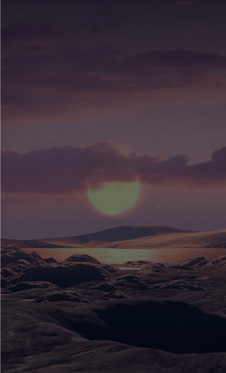

Articles

Read 3 minutes
Exoplanet Kepler-1649c: the look of the artist
Astronomers have found another potentially inhabited "twin" of the Earth
Astronomers have found another potentially inhabited "twin" of the Earth. In the archival data of the Kepler space telescope, scientists discovered the planet Kepler-1649c - the closest to the Earth in size and, possibly, surface temperature.
The Kepler space telescope worked in orbit from 2009 to 2018, discovering several thousand distant exoplanets. However, most of them are much larger than the Earth, and even smaller are at a suitable distance from their stars, creating comfortable conditions for potential life. However, the analysis of the data collected by Kepler continues, and recently they managed to notice the planet Kepler-1649c, which had previously escaped attention.
In a press release from NASA's Jet Propulsion Laboratory, Kepler-1649c is called the most similar to our planet found with Kepler. Located 300 light years from Earth, it is only 1.06 times larger and receives from its star 75 percent of the energy that we receive from the Sun. Read more about the find in an article published in The Astrophysical Journal Letters.
Exoplanet Kepler-1649c: the look of the artist
Given the distance to the star and the fact that it is a relatively dim red dwarf, the temperature on the Kepler-1649c may be about the same as ours. The planet is so close to the star that a year on it lasts about 19.5 Earth days. In the same system there is at least one rocky planet of a similar size, but its orbit passes almost twice as close to the star.
It is worth saying that red dwarfs are stars more restless than our yellow Sun. Every now and then they throw out powerful streams of radiation and particles that can destroy all life on a nearby planet. Neither the composition nor the density of the atmosphere of Kepler-1649c are known, on which the temperature on its surface largely depends.
Nevertheless, while the planet looks like one of the most suitable candidates for habitability. In fact, some of the known exoplanets (for example, TRAPPIST-1f) differ even less in size from the Earth, while others (for example, TRAPPIST-1d) differ in temperature. However, a combination of both is found only in Kepler-1649c so far.